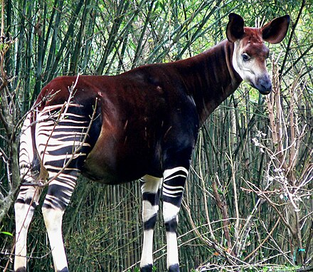

Mi nombres es Alexia Gomez Gonzalez y soy una invstigadora de 19 años,
desde que naci que vi a mi padre y le dije; padre, sere investigadora profesional de okapis
11 23457890 (telefono)
Gmail: alexiaokapis@gmail.com
El okapi es un animal muy feo, que parece el hibrido de una cebra, un caballo y una jirafa. Lamentablemente estos extraordinarios animales estan en peligro de extincion desde antes que naciera mi padre (nadie sabe como siguen existentes ahora pero perduran) y debemos ayudarlos para que no se extingan del todo, sera nuestra responsabilidad
CLICKEA AQUI PARA MAS FOTOS DEL OKAPI
si clickeas en la imagen de abajo, te llevara a un video de un socio mio, quien te explicara mas al respecto de este animal!!.
